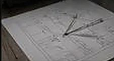
01
Проектирование
Детальная проработка световых сценариев
Этап обязателен на каждом объекте, независимо от площади. Результат фиксируем и передаём заказчику до перехода к следующему шагу.
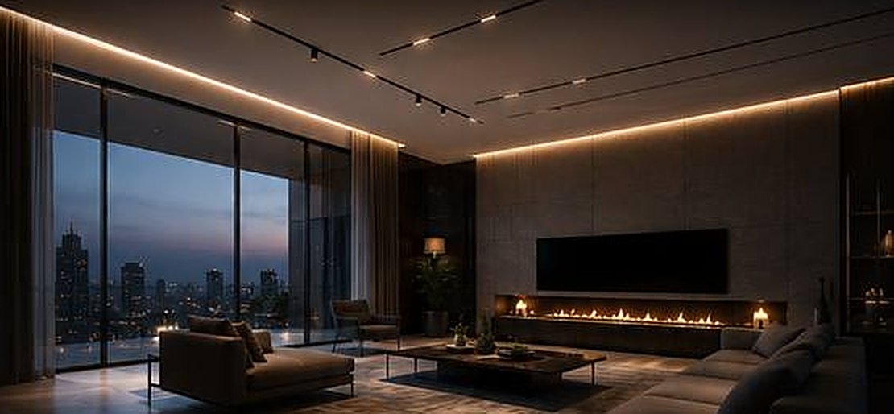
Создаём уникальные интерьеры с помощью современных потолочных решений и безупречного света.
Соединяем теневые системы, световые линии, треки и скрытые карнизы в единую архитектурную композицию.
Это не просто потолок.
Это целостная система света.
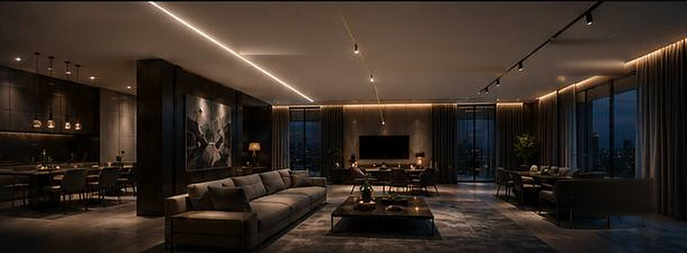
нажмите на цифры
Современная фотопечать с подсветкой и парящим профилем

Детальная проработка световых сценариев
Этап обязателен на каждом объекте, независимо от площади. Результат фиксируем и передаём заказчику до перехода к следующему шагу.
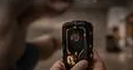
Миллиметровая точность для идеального результата
Этап обязателен на каждом объекте, независимо от площади. Результат фиксируем и передаём заказчику до перехода к следующему шагу.
Чистота и защита вашего интерьера
Этап обязателен на каждом объекте, независимо от площади. Результат фиксируем и передаём заказчику до перехода к следующему шагу.
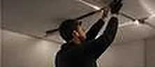
Опытные мастера и качественные материалы
Этап обязателен на каждом объекте, независимо от площади. Результат фиксируем и передаём заказчику до перехода к следующему шагу.
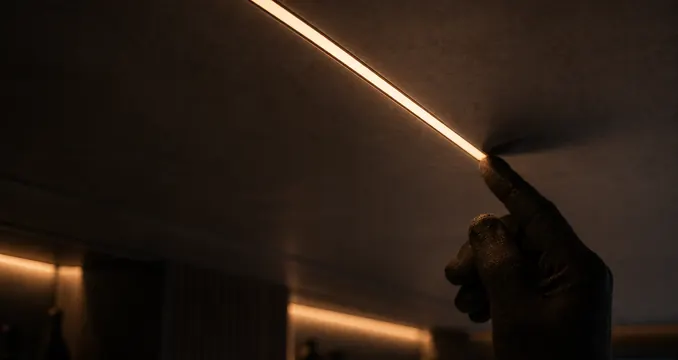
Многоступенчатая проверка на каждом этапе
Этап обязателен на каждом объекте, независимо от площади. Результат фиксируем и передаём заказчику до перехода к следующему шагу.
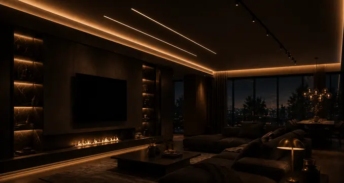
Гарантия до 10 лет на все работы и материалы
Этап обязателен на каждом объекте, независимо от площади. Результат фиксируем и передаём заказчику до перехода к следующему шагу.
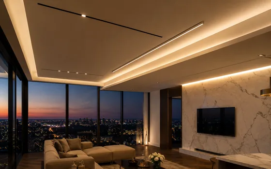
Искали подрядчика, который сможет объединить разные потолочные решения в единую концепцию. Результат превзошёл ожидания.
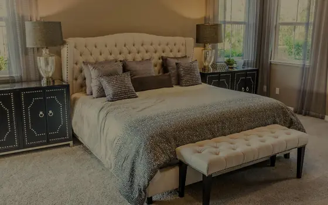
DEVAGO предложили решение, которое полностью изменило восприятие пространства. Качество исполнения на высочайшем уровне.
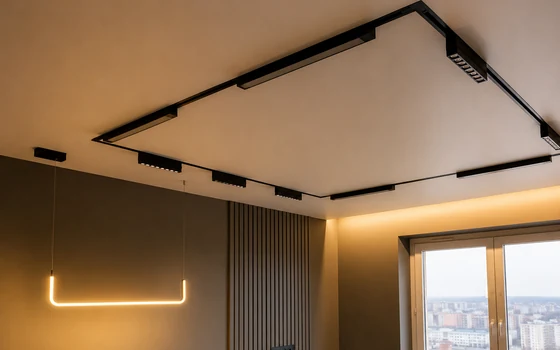
Безупречное качество, аккуратность и внимание к деталям. Световые решения идеально подчеркнули архитектуру интерьера.
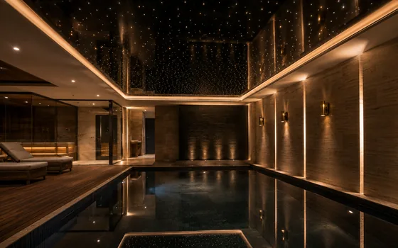
Световые линии и скрытый карниз создали идеальную атмосферу релакса и уюта.
Плейсхолдер 1. Здесь встанет реальный отзыв клиента: что заказывали, что было важно и как прошла работа. Текст даёт копирайтер.
Плейсхолдер 2. Здесь встанет реальный отзыв клиента: что заказывали, что было важно и как прошла работа. Текст даёт копирайтер.
Плейсхолдер 3. Здесь встанет реальный отзыв клиента: что заказывали, что было важно и как прошла работа. Текст даёт копирайтер.
Получите консультацию и расчёт стоимости вашего проекта бесплатно.
16 лет · 18 500+ объектов · гарантия до 10 лет
Ответим в течение рабочего дня. Замер и расчёт бесплатны.